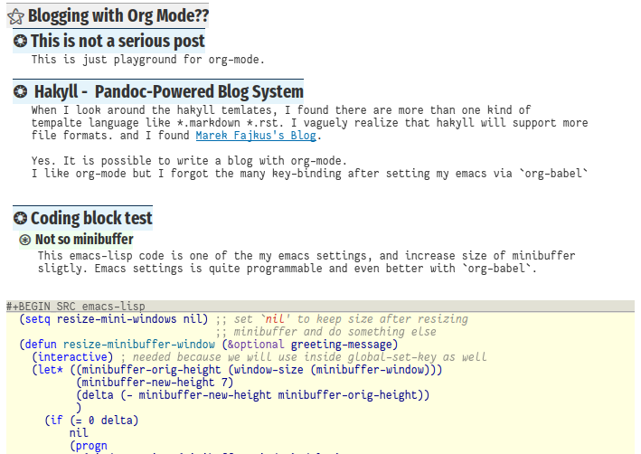

Blogging with Org Mode??
The picture below shows how it looks like when I writing in emacs org-mode – of course – in emacs editor.

Note: To embed the image you need to write down like:
[[/link/to/yourimagewith.extension/]]
.png extension works. .jpg should do as well.
However, .webp is not recognized for embeded image on hakyll blog.
Hakyll - Pandoc-Powered Blog System
When I look around the hakyll templates, I found there are more than one kind of template language like *.markdown, *.rst. I vaguely realize that hakyll maybe support more file formats. And I found Marek Fajkus’s Blog. where the author write the artilces actually org-mode. please visit: an example of his raw code in org mode
Yes. It is possible to write a blog with org-mode. 👍
I like org-mode but I forgot the many key-binding after setting my emacs via org-babel. But it was absolutely remarkable setup method which I never experienced before.
Foot note test: Hakyll Homepage Link is at the bottom. 1
The links will be located in <section class="footnotes"> at the bottom just before footer.
So we could possibly re-arrange them on the other part of the page. which is, I think,
awsome!
Coding block test
Not so minibuffer (an example emacs-lisp code from me)
This emacs-lisp code is one of the my emacs settings, and increase the size of minibuffer sligtly. Emacs settings is quite programmable and even better with `org-babel`.
(setq resize-mini-windows nil) ;; set `nil' to keep size after resizing
;; minibuffer and do something else
(defun resize-minibuffer-window (&optional greeting-message)
(interactive) ; needed because we will use inside global-set-key as well
(let* ((minibuffer-orig-height (window-size (minibuffer-window)))
(minibuffer-new-height 7)
(delta (- minibuffer-new-height minibuffer-orig-height))
)
(if (= 0 delta)
nil
(progn
(window-resize (minibuffer-window) delta)
(when greeting-message (message "Have a nice one. ;^]"))
)
)))
;; resize minibuffer on terminal and window-system when initializing
(add-hook 'window-state-change-hook (lambda ()
(resize-minibuffer-window t)))
(global-set-key (kbd "C-l") (lambda()
(interactive) ; without this emacs will complain
(redraw-display)
(resize-minibuffer-window)))More Emacs / Org Mode resource
YouTube
-
His org-mode series is the best so far.
Mike Zamansky’s Youtube Channel
Talks about not only about org-mode but also variety of emacs stuff. which really helps when I was trying to setup my emacs.
System Crafters’s Youtube Channel
Relatively new youtuber. I glimpse his videos which I think professional videos.
HACKING More Feature for hakyll
- Support series - which is not slightly different from tag maybe I could possilbly use special tag for a series but I’d like to use some table of content on the series in a related blog. So I don’t need to update the link of whole blogs posts.
- Syntax highlight on some text like “TODO” “HACKING” “XXX” etc.
Learning Org-mode and Blogging at the same time.
- Deadline or schedule disappear when we just pressed the shortcuts. Because it goes beginning of the lines. below codes are, on the contrast, I moved from the original place which is displayed. DEADLINE: <2022-03-27 Sun>
schedule test
- SCHEDULED: <2022-03-28 Mon>
More Tests
Foot note
Tables
Shortcuts Table (mainly for file or buffer)
If we input like below, it will looks like the following html.
#+BEGIN_SRC #+NAME: myjin/shortcuts-list | Keymap | Key | Binding Type | Link |-----------+-------------+--------------+----------------------------- ..... | t | m | file | ~/proj/.code-memo.org #+END_SRCNote: each table has the name which we can refer later. I don’t have any style for table, so it will look very boring. 🥱
Keymap Key Binding Type Link Extra Info Note t m file ~/proj/.code-memo.org nil nil for no prefix t b file ~/gtd/inbox.org nil t g file ~/gtd/gtd.org nil t i file myoungjin-init.org t t for using user-emacs-directory t s buff scratch nil it looks bold when type **scratch**t e file ~/gtd/english.org nil t p toggle paredit-mode toggle mode g C-c d func paredit-forward-down g C-c s func paredit-splice-sexp for terminal compatibility g C-c <left> func paredit-backward-slurp-sexp .. g C-c <right> func paredit-backward-barf-sexp .. g C-] func fold-dwim-toggle g C-x [ func fold-dwim-hide-all g C-x ] func fold-dwim-show-all t j func tabbar-backward t k func tabbar-forward t h func tabbar-backward-group t l func tabbar-forward-group g C-c DEL func myjin/hungry-delete-backward g C-c C-d func myjin/hungry-delete-forward g C-c a func org-agenda g C-c c func org-capture org-mode M-n func org-next-link org-mode M-p func org-previous-link org-mode C-c m RET func myjin/org-insert-todo-heading WORKAROUND org-mode C-c m \ func org-insert-todo-heading-respect-content rust-mode C-c C-c func rust-run emacs lisp to turn the table into shortcuts
Each table has a name for it which is not shown here but it looks like:
(dolist (r shortcuts-data) (let (key-after-map binding-type link extra-info) (setq key-map (nth 0 r) key-after-map (nth 1 r) binding-type (nth 2 r) link (nth 3 r) extra-info (nth 4 r)) (cond ((or (string= key-map "") (string= key-map "g")) (setq key-map 'global-map)) ((string= key-map "t") (setq key-map 'myjin-map)) (t (setq key-map (intern (concat key-map "-map"))))) (cond ((equal binding-type "file") (setq extra-info (if (string= extra-info "t") t nil)) (define-key (symbol-value key-map) (kbd key-after-map) `(lambda () "open a file" (interactive) (require 'which-key) (myjin/load-file ,link ,extra-info)))) ((equal binding-type "buff") (define-key (symbol-value key-map) (kbd key-after-map) `(lambda () "open a link" (interactive) (switch-to-buffer ,link)))) ((equal binding-type "toggle") (define-key (symbol-value key-map) (kbd key-after-map) `(lambda () "toggle major mode" (interactive) (let* ((s (intern ,link)) (on? (symbol-value s)) (inverse-on (if on? -1 1))) (funcall s inverse-on))))) ((equal binding-type "func") (define-key (symbol-value key-map) (kbd key-after-map) `(lambda () "call a function" (interactive) (funcall (intern ,link))))))))
Thank you for Reading
It’s time to use more schedule and GTD stuff integrated with blog system!!! And this is why I love the emacs system.